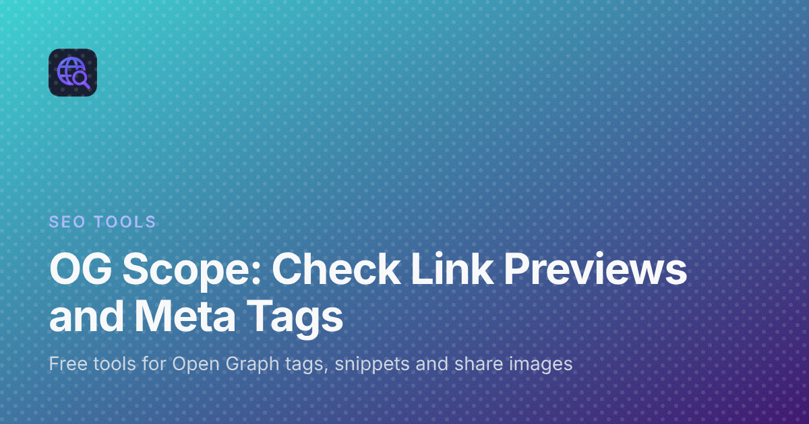

OG Scope: Free Tools to Check Link Previews and Meta Tags
You publish a page, paste the link into a chat or a social post, and the card that appears is wrong. The title is cut off, the picture is an old logo, or there is no picture at all. The page itself looks fine in the browser, so the problem is hidden in the tags that apps read when a link is shared.
OG Scope is a small set of free SEO tools built for exactly that moment. Each tool answers one question about a page, from the share card to the search result, and every one of them runs in the browser without an account. This post explains what the site offers, who it is useful for, and a simple order to use the tools in.
What OG Scope is
OG Scope describes itself as a set of free tools for checking how a page is described to search engines and social apps. It started as a single Open Graph checker and now also covers meta tags, search snippets, redirects, sitemaps and share images.
A few points from the site are worth knowing before you start:
- No sign-up. The tools work without an account, a trial or an email address.
- It reads the public HTML. Checks fetch the page the way a crawler does and read the tags in the first response. Tags that are added only by JavaScript will not show up.
- Previews are estimates. Link cards and search snippets are built from your tags. They are not screenshots of any platform, and OG Scope is not affiliated with Meta, LinkedIn, X or Google.
- Nothing kept for long. There is no search history. A successful check may stay in server memory for about ten minutes so a repeat check is faster, and then it is gone.
Who it is for
The tools are useful for anyone who publishes pages and shares links to them:
- Developers who want to confirm that a template prints the right title, description, canonical URL and image for every page.
- Bloggers and writers who want a post to look clean when it lands in a feed or a group chat.
- Marketers and site owners preparing a launch, a newsletter or a campaign link.
- Anyone debugging a card that shows the wrong picture or no picture at all.
The site also has plain guides on Open Graph previews, OG images, and the Facebook, LinkedIn and X cards.
The tools, one by one
Open Graph checker
The Open Graph checker is the place to start when a shared link looks wrong. Paste a public URL and it shows estimated cards for Facebook, LinkedIn, X, WhatsApp, Slack, Discord and Telegram, a table of the metadata it found, a check of the Open Graph image, an HTML export and a checklist that flags missing or broken tags.
Meta tag checker
The meta tag checker lists the tags that matter for search and sharing: the document title, meta description, canonical URL, robots tag, viewport, language, H1, and the Open Graph and Twitter tags. It is a quick way to confirm that the live HTML matches what your template is supposed to print, for example that the robots tag still allows the page to be indexed.
SERP preview
The SERP preview estimates how a title and description fit a Google result on desktop or mobile. It shows the pixel width, can add a date or product prefix, and can show a rich snippet line. It is handy when a page ranks but its title gets cut off.
OG image size and OG image generator
Two tools deal with the picture itself. OG Image Size crops and resizes an existing image in the browser to 1200 × 630 or another Open Graph size, then downloads it as PNG, JPG or WebP. The OG image generator draws a new share image when a page has no photo of its own. You pick one of twelve templates, such as Article, Hero, Minimal or Browser, type a tag, a title and a description, choose one of five fonts, set a gradient or solid background, add a logo or an image, and download the file. The preview on the page is the same file that downloads.
Redirect checker and XML sitemap generator
The redirect checker follows a URL hop by hop as a browser, Googlebot or a link preview bot, and lists each status code, any meta refresh and the final URL. That makes it easy to spot a temporary redirect that should be permanent, or a chain of several hops. The XML sitemap generator crawls a site into a sitemap.xml file and, on the way, reports broken links and pages blocked from indexing that it passes.
How to use OG Scope: a simple order
You do not have to open every tool every time. A short routine before sharing a new page covers most problems:
- Step one: check the card. Paste the page URL into the Open Graph checker and read the checklist. Fix any missing title, description or image tag first.
- Step two: fix the image. If the picture is missing, too small or the wrong shape, crop a photo with OG Image Size or make a new one with the generator, upload it, and point your og:image tag at the full URL.
- Step three: check the search side. Run the meta tag checker to confirm the canonical URL, robots tag and description, then use the SERP preview to see whether the title fits.
- Step four: check the address. If the link is a short link, an old URL or an http address, run it through the redirect checker so you know where it finally lands.
- Step five: check again. After you publish your changes, run the Open Graph checker one more time.
Platforms often cache a card, so an app may show the old version for a while even after the tags are fixed.
What OG Scope does not do
It helps to know the limits so the results are read correctly. The cards are estimates, so a platform can still crop text or pick a different image. The checkers only read public pages, and the server will not request localhost or private network addresses. A site can block the request, and each visitor can run a limited number of previews per minute.
Frequently asked questions
Is OG Scope free?
Yes. Every tool on the site is free to use, and none of them needs an account or a sign-up.
Which tool should I open first?
For a shared link that looks wrong, start with the Open Graph checker. For title, description, canonical and robots tags, use the meta tag checker. For the Google result line, use the SERP preview.
Are the previews exact copies of each platform?
No. They are estimates built from the page's tags. Each platform can crop text, choose a different image or show an older cached copy.
What size should a share image be?
The templates in the generator are 1200 × 630, the size most often used for a large link preview. The OG Image Size tool can also crop to other Open Graph sizes.
Does OG Scope store the URLs I check?
There is no account or search history. A successful check may stay in server memory for about ten minutes, and the site's privacy page has the details.
Wrapping up
A link preview is often the first thing people see of a page, and it is decided by a handful of tags. OG Scope gives you a quick, free way to see those tags, estimate the card, fix the image and check the search snippet before the link goes out. Open the checker the next time you publish, and the surprise of a broken card becomes a quick fix.